How Influential is the Porn Industry?
UX/UI
Software
- Adobe After Effects
- Adobe Illustrator
- Adobe XD
Objective
To objective was to create an interactive data visualisation on the topic of internet health with the intention of mobilising the public into taking action for positive change. This was in collaboration with Mozilla and their Annual Internet Health Report.
Approach
The outcome was an educational game that initially explored the porn industry and its effect on society before asking the user a series of questions about their experience with porn. The user's answer to these questions would be displayed alongside the last 15 users to create a sense of community and solidarity whilst keeping animosity. It was through these UX processes that I discovered the importance of anonymity in this user-centred design due to the sensitivity of the topic.
Outcome
Overall, I was happy with my final outcome. I believe that it achieved the objectives of creating a visualisation on the topic of internet health, as the porn industry is one of the most influential and mobilised actions by the user through education and reflection. If I were to pursue this further, I would collect further data to help address more ways in which the porn industry affects society.
 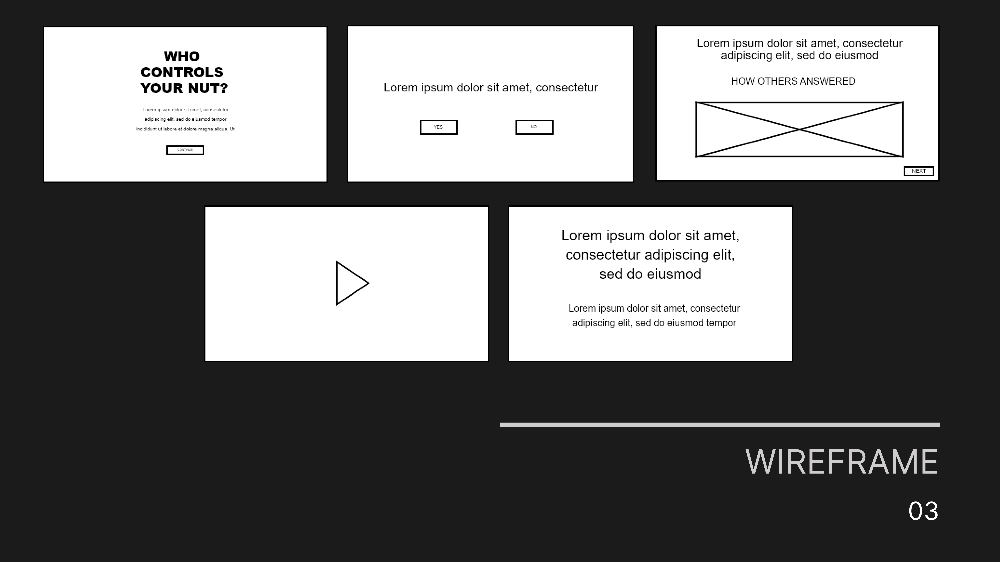
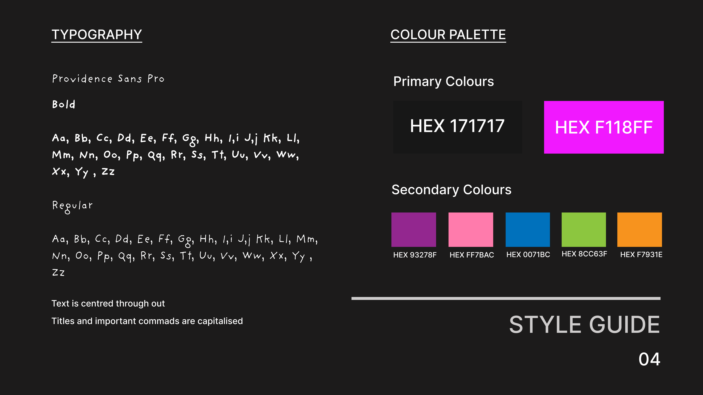
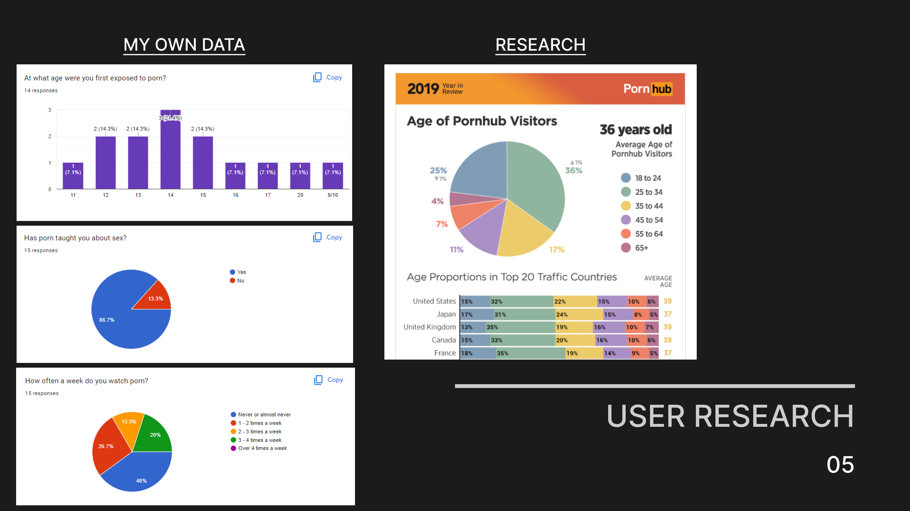
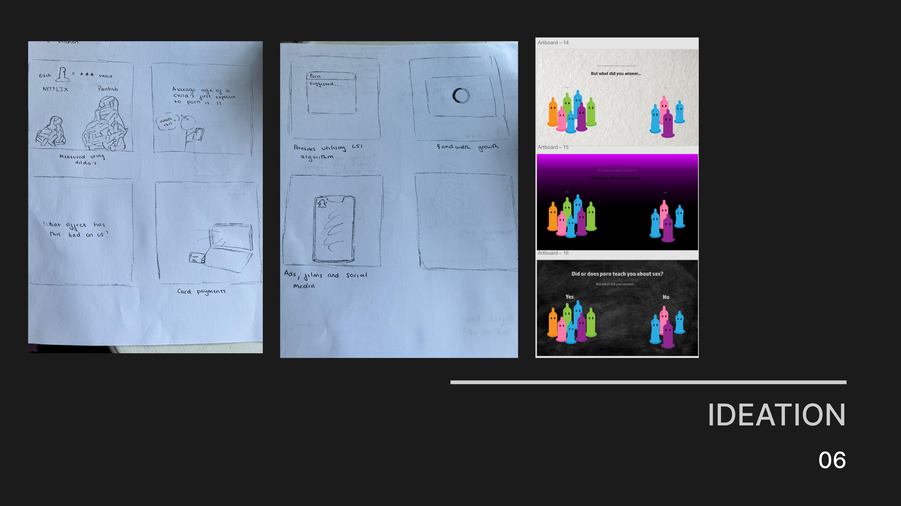
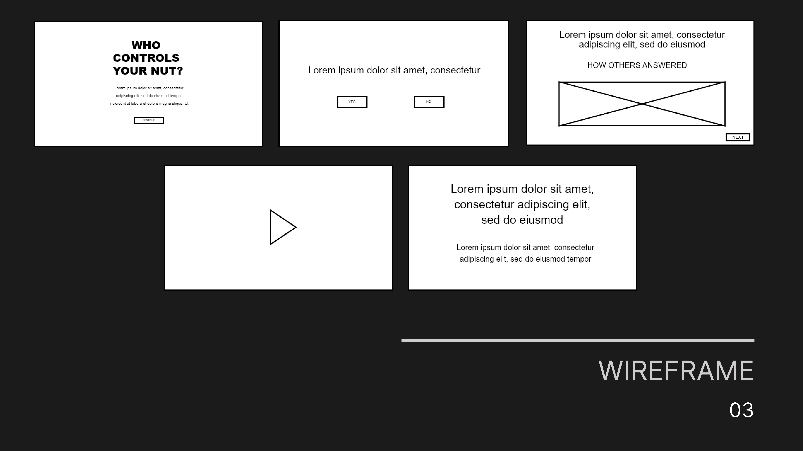
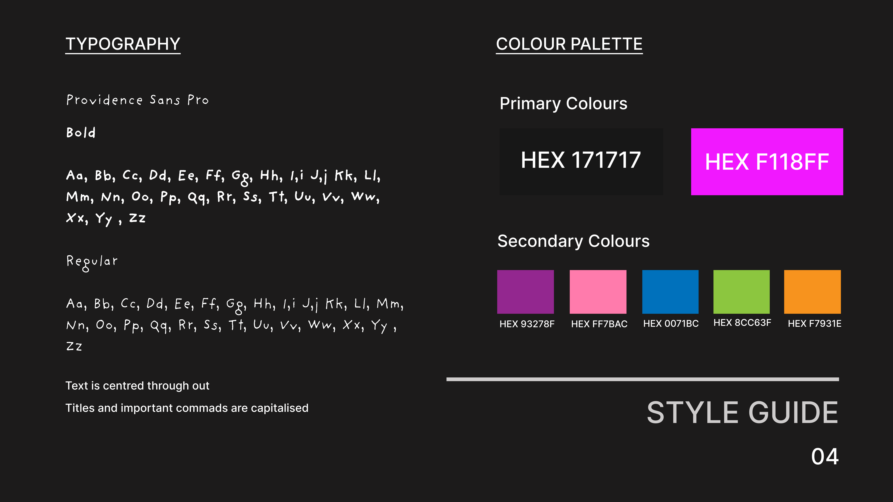
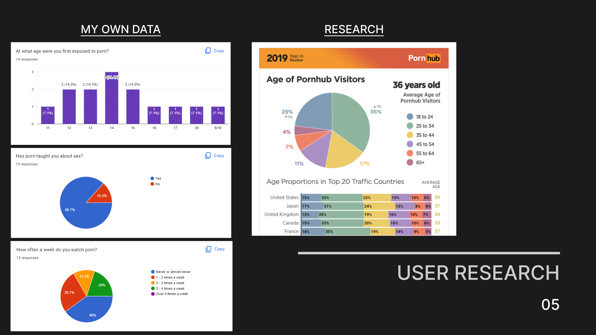
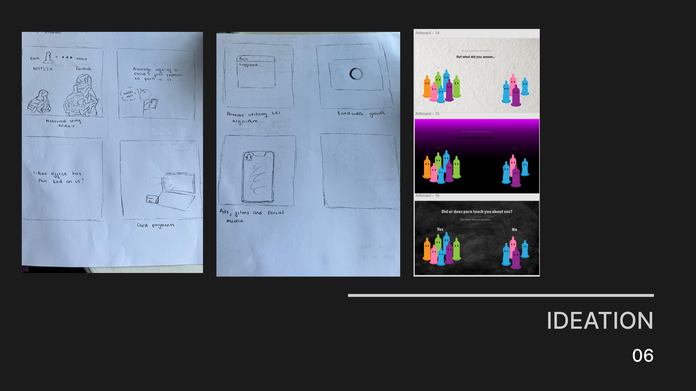
 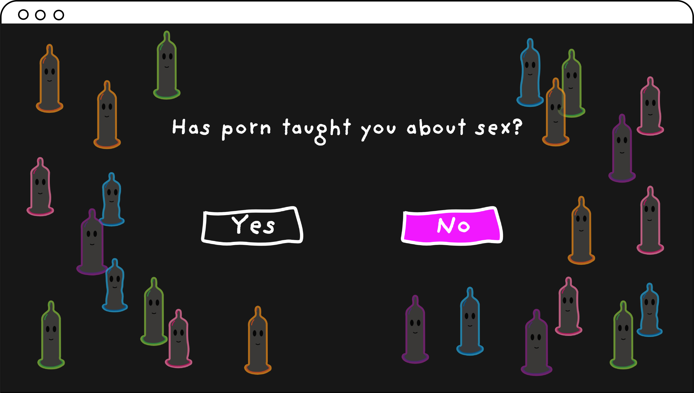
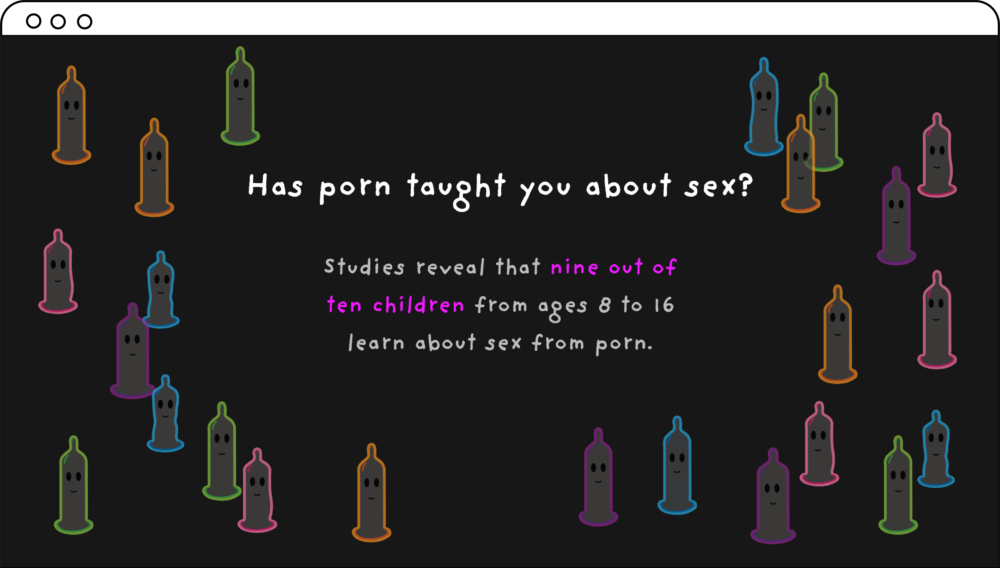
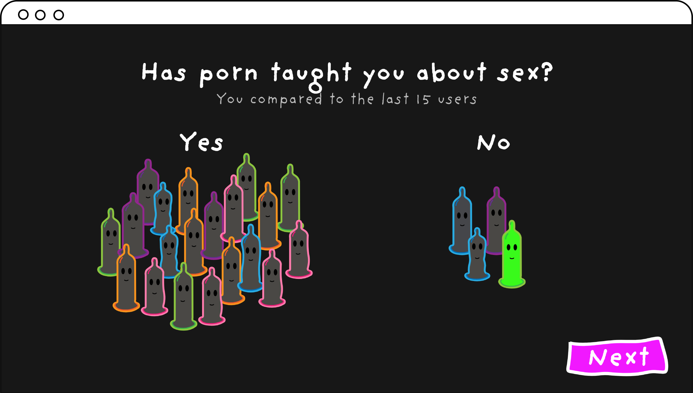
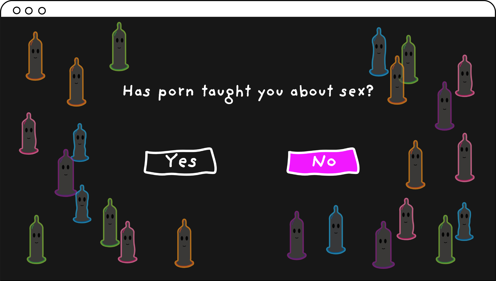
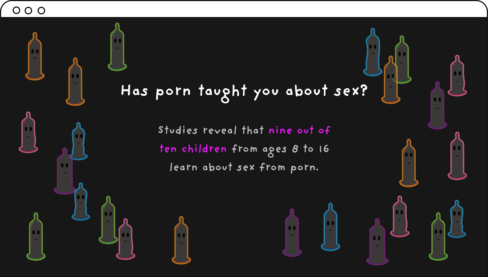
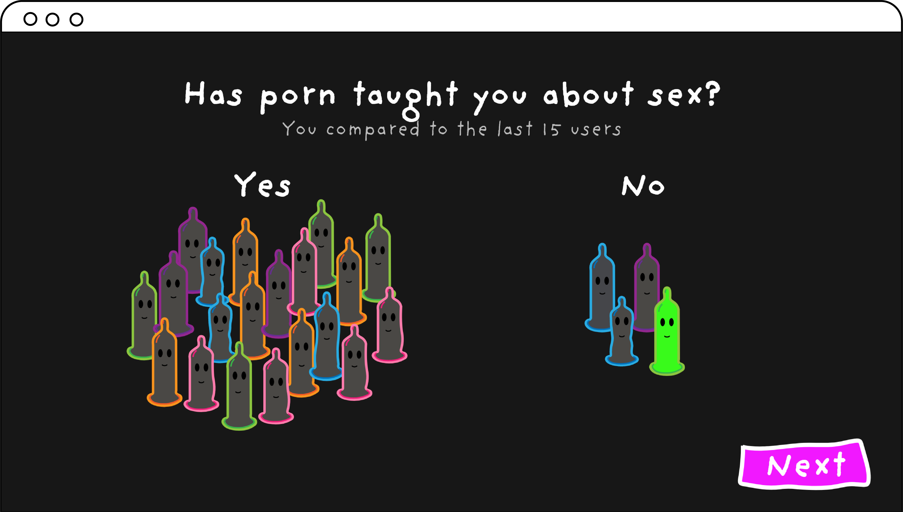